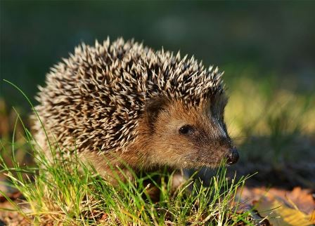
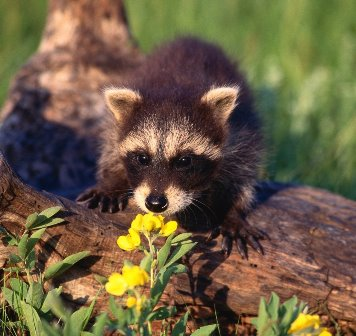
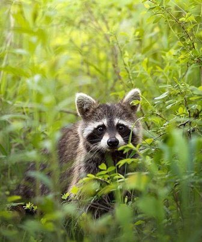
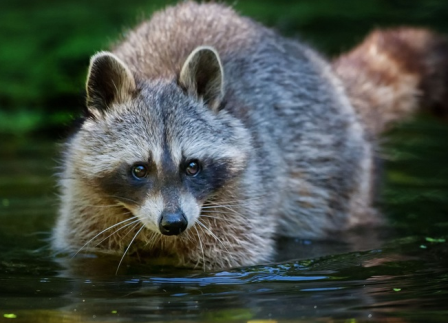
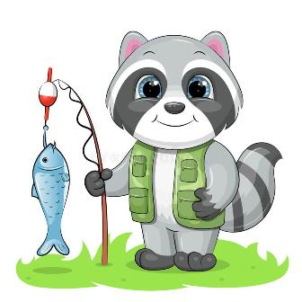

Казка про безпеку: як Їжачок Буль загубив свою безпеку, а потім знайшов її
Кожен день Їжачка Буля був схожий один на одного, і це йому дуже подобалось. Він прокидався біля сьомої, мама готувала йому сніданок та цілувала в чоло, він йшов до школи схожими шляхами. Буль зустрічав своїх друзів по дорозі, вони разом заходили до класу, слухали вчителя, любили грати в футбол після занять. Їжачок знав, що не можна виходити за межі його Чарівного лісу в Ворожу гущавину, але можна подорожувати до інших лісів або полів з дозволу батьків. До Ворожої гущавини він ніколи не ходив і жив від неї далеко, тому почувався переважно безпечно. Хіба що іноді деякі страхи могли з’явитись в його голові та налякати тінню на кухні або шурхотінням гілок. Але мама та тато завжди могли заспокоїти Буля та пояснити, що це лише його уява. Але одного дня стало страшно навіть батькам Їжачка, а також всім його однокласникам та сусідам. Несподівано з Ворожої гущавини на Чарівний ліс напали хижі, злі та зовсім дикі дракони. Вони налякали всіх так сильно, що казка про безпеку була зруйнована вщент і всім здалось, що відновити звичне життя вже не вдасться.
Зазвичай Буль прокидався біля сьомої в будні дні, щоб піти до школи. У вихідні він міг прокинутись або пізніше, або навпаки раніше. Чомусь його очі любити розплющитись о шостій і він починав блукати будинком, а батьки просили його полежати у ліжку ще і не будити їх. Іноді він навіть готував сніданок для всієї родини, якщо прокидався рано. Деякі його друзі мали досвід прокидання о четвертій ранку, тому що вони мандрували в інші ліса на літаках і мали вирушати у подорож дуже рано. Але сам Їжачок якщо і літав кудись з батькам на літаку, все одно не мав вставати з ліжка уночі.
Тієї ночі Їжачок вперше прокинувся біля п’ятої ранку. Спочатку він почув стурбованих батьків за стіною, а потім якісь вибухи за вікном. Буль і сам не знав, що його налякало більше – чи звуки, чи страх на обличчях батьків.
- Війна . – промовив тато.
Буль знав, що війна – це те, що було дуже давно і що забирає життя інших, але він не знав, що вона й досі існує і може прийти до них. Але з виразу обличчя тата, Буль зрозумів, що війна дуже страшна. Саме в цей момент щось всередині нього тріснуло, а потім розбилось. Виявилось, що це була безпека. Буль і сам не знав, що вона була з ним усе його життя та існувала всередині. Десь всередині нього було багато органів – серце, печінка, шлунок – вони допомагали йому співіснувати з цим світом, дихати, їсти, дивитись на світ. А ще всередині нього була безпека, вона дозволяла йому добре себе почувати та бути впевненим, спокійно повторювати буденні дії. Але після слів тата безпека тріснула та Буль залишився без неї. На її місці відразу ж оселились страхи. Шипи Буля відразу ж вилізли на поверхню, очікуючи на небезпеку. Теж саме сталось з батьками. Вони були напружені, і їх заховані у звичайний час шипи тепер вилізли на поверхню і захищати їх.
- Нам треба швидко заберитись звідси. – сказав тато.
- Але ж це наш дім і наш рідний ліс. – відповіла мама.
Буль бачив, що її безпека всередині тріснула. Так само як і татова.
- Тепер тут небезпечно. – промовив тато, який теж побачив, що тепер всередині нього лише купа страхів і жодної безпеки.
Тож родина швидко забрала речі та вирушила до іншого лісу. По дорозі Їжачок бачив тих самих ворожих драконів, які прийшли до їх лісу та почали спалювати дерева і руйнувати хатки його друзів та сусідів. На щастя, Буль бачив все це дуже далеко, але все одно дуже боявся.
Він заліз вглибину свого панцеру та випустив шипи ще більше. Він ще раз подивився та уламки безпеки. Як сумно йому стало за неї. Вона була завжди з ним, а тепер від неї залишились лише уламки, через які можна було навіть порізатись. Ще сумніше було те, що тепер він ніколи не зможе побудувати нову безпеку з тих уламків, вона була зруйнована назавжди, казки про безпеку більше не існувало. Машина швидко їхала по дорозі і заколисувала Буля. Він й сам не помітив, як повільно перейшов з реальності до світу снів.
Коли Їжачок Буль прокинувся, то побачив море. Він не повірив власним очам. Їх ліс був дуже далеко від моря, невже вони доїхали так далеко.
- Де ми? – запитав Їжачок у мами, побачивши її на терасі.
- Ми дуже далеко! В місті Пальм та Блакитного моря. Тепер ми будемо жити тут! – мама посміхнулась! – Нам дуже пощастило!
Але Їжачок не розумів, чому мама посміхалась. Він почав шукати тата і побачив його біля машини. Тато щось лагодив в авто.
- Ти довго спав! Майже всю нашу довгу дорогу!
- Чому мама і ти посміхаєтесь? Адже дракони всюди!
- Ні, тут драконів нема. Вона занадто слабкі, щоб дійти сюди і їх вогонь сюди долетіти не може. До того ж місто Пальм та Блакитного моря охороняють тигри та соколи. Тому тут ми у безпеці.
Сказавши це, тато ще раз посміхнувся. Буль подивився на безпеку всередині тата і побачив, що хоч вчора вона і була розбита, сьогодні виглядала значно краще. Все одно залишалась в дірках, але складалось враження на те, що її рани заживали і дірки ставали меншими. На жаль, того не можна було сказати про безпеку всередині його. Там все ще не було нічого, лише уламки і не було схоже на те, що колись безпека воскресне, як колись воскрес Христос за словами його бабусі. Подумавши про це, Їжачок відразу ж згадав про бабусю і здається, що уламки його безпеки розпались на ще більшу кількість уламків:
- А як же наша бабуся!
- Не хвилюйся! Вона сіла на поїзд і зараз знаходиться далеко від драконів зі своїми подругами.
- А як же наш будинок? І моя школа? І наше місто?
- Скоро його звільнять звірі, які знають, як подолати дракона. Дракон сильний, але дуже дурнуватий та дикуватий. Тому потрібен час на те, щоб побороти його зло. Але поки що ми будемо тут, адже тут ми у безпеці.
Раптом тато Буля помітив, що всередині сина лише уламки безпеки, які досі ріжуть його. Мама, що якраз увійшла до кімнати, теж побачила уламки безпеки Буля. Їй стало дуже соромно за те, що лише зараз вона розгледіла, який вразливий її син і як сильно він постраждав від дракона, хоча той і був далеко. Мама відразу ж підійшла до Буля та міцно його обійняла. Тато зробив теж саме. Буль не повірив своїм очам, але від теплих обіймів деякі з уламків безпеки поєднались і відновились.
Увесь день батьки провели з Булем. Вони гуляли по місту Пальм та Блакитного моря, їли морозиво та звикали до нової атмосфери. Іноді Булю було дуже страшно, адже там була незвична їжа, мова і все незвичне. А іноді було дуже цікаво, адже там були гарні дерева і море, звірі сміялись та світило сонечко, життя продовжувалось. Батьки обіймали його дуже часто, катали на гойдалці і навіть придивлялись до велосипедів у магазинах. Думка про те, що скоро у нього з’явиться велосипед, дуже потішила його. Ввечері родина повернулась додому і Буль подивився у дзеркало.
- Не може бути! – зауважив Буль.
Його безпека майже відновилась і знову прийняла певно форму, яка захищала його навіть краще, ніж шипи. І хоча на ній ще було багато шрамів та нерівностей, вона дуже постраждала від дракона, але знову повернулась до Буля. Він зрозумів, що йому потрібно ще багато часу, щоб вона стала такою ж, якою була до дракона. А може вона вже ніколи такою і не стане. Але тим не менше, вона все ж була всередині нього і робила його життя набагато більш спокійним. Тому Буль зміг впевнено виходити на вулицю за батьками і не думати про те, що божевільний дракон може напасти на нього знову.
Казка про унітаз
Єнот В'ячеслав жив в чарівному лісі, де існувала традиція ловити рибу. Ось тільки зазвичай рибу ловили з унітазу. Коли В'ячеслав був маленьким, його це не бентежило. Він і сам любив взяти вудку і посидіти біля унітазу з татом, поговорити про життя, почекати улову. Правда, ще жодного разу у нього не вийшло нічого зловити. Та й ні разу не бачив, як якийсь улов міг би показати тато або сусіди. При цьому в лісі часто ходили легенди про те, як хтось піймав величезну рибу і їв її кілька днів, плямкаючи від божественного задоволення. Казка про унітаз розповість про те, як єнот В'ячеслав навчився ловити рибу в озері і перестав вірити в стереотипи.
Чим старше єнот ставав, тим очевидніше йому було, що в унітазі не водиться риба. Адже зазвичай туди ходять справити нужду, потім промивають все це в каналізацію. Ну як з відходів єнотів може з'явитись риба? Тут явно було щось не те.
- Тато, а чому все ловлять рибу з унітазу?
- Так робив твій дідусь і дідусь твого дідуся. Всі так роблять.
- Ти хоч раз зловив рибу в унітазі?
- Звісно! Багато разів!
- Але чому тоді ми ні разу не їли рибу?
Папа В'ячеслава почервонів від сорому, і єнот зрозумів, що батько бреше. Але він не став засуджувати тата, адже в чарівному лісі всі постійно брехали про улов. Єноти явно робили це не спеціально, а лише тому що навчилися від інших же єнотів. Але в той день В'ячеслав вирішив покласти край брехні і марної витрати сил. Він вирішив довести те, що це всього лише дурна казка про унітаз і насправді риби там немає.
В'ячеслав почав підходити до рибалок і задавати їм питання.
- Ви хоч раз щось зловили тут?
- Звісно! - брехали ті в унісон.
- Ну покажіть тоді свій улов.
- Сьогодні нема. Але я чув, що в південній частині лісу сьогодні дуже хороший улов.
Єнот відправився на самокаті в південну частину лісу, але там теж ні в кого не клювало. Проте ходили казки про те, що сьогодні клює в північній частині лісу.
На наступний день В'ячеслав озброївся аргументами і спробував довести рибалкам, що неможливо зловити рибу з унітазу. Він пояснював це за допомогою фізики, хімії, інженерії, за допомогою логіки, гумору, метафор. Але нічого не спрацювало. Рибалки не хотіли вірити єноту і продовжили ловити рибу з унітазу.
Розчарувавшись, єнот пішов відпочити біля озера і побачив чайку. Вона щось тримала в дзьобі. Спочатку В'ячеслав навіть не зрозумів, що це. Але потім впізнав рибу.
- Чайка, невже ти їси рибу?
- Так!
- Але де ти взяла її?
- Ну точно не в унітазі.
- А де?
- Там, де її повно. В озері.
Єнот підбіг до озера і побачив там величезну кількість різної риби. Він відразу ж побіг додому, взяв вудку і прибіг назад. За кілька хвилин наловив повне відро риби на будь-який смак. Вдома батьки були шоковані. Вони ще ніколи не бачили так багато риби.
- Де ти знайшов такий унітаз?
- Так кажу ж вам, в унітазі риби не зловиш! Я зловив рибу в озері!
- Навіщо ти брешеш? - засмутилася мама.
- Всі знають, що риба є тільки в унітазах! - відповів тато.
А Єнот просто склав руки і зрозумів, що навіть з відерцем риби в руках він нічого не доведе батькам.
- Мама, а ти хоч знаєш, як рибу готувати?
- Ще ні разу пробувала, але сподіваюся нескладно.
Риба в той день вийшла несмачною, більшу її кількість довелося викинути. В'ячеслав з тих пір не намагався довести єнотам про те, що рибалка в унітазі неефективна і марна. Він навчився готувати рибу і тепер приходить до озера раз в тиждень, ловить трохи рибки, сам же її запікає на багатті і їсть. При цьому радіє природі, тиші, спокою, смаку риби і компанії чайок, які розуміють його краще за інших.
